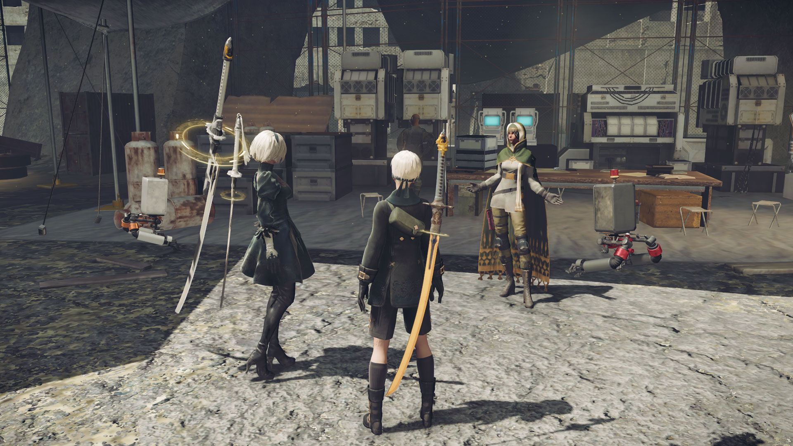
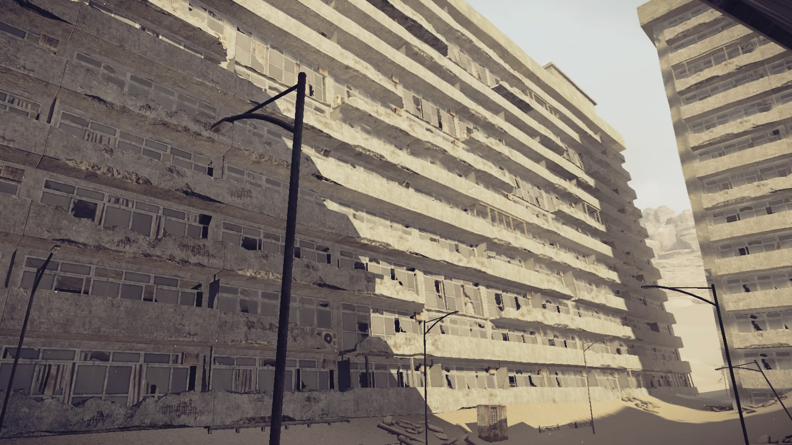
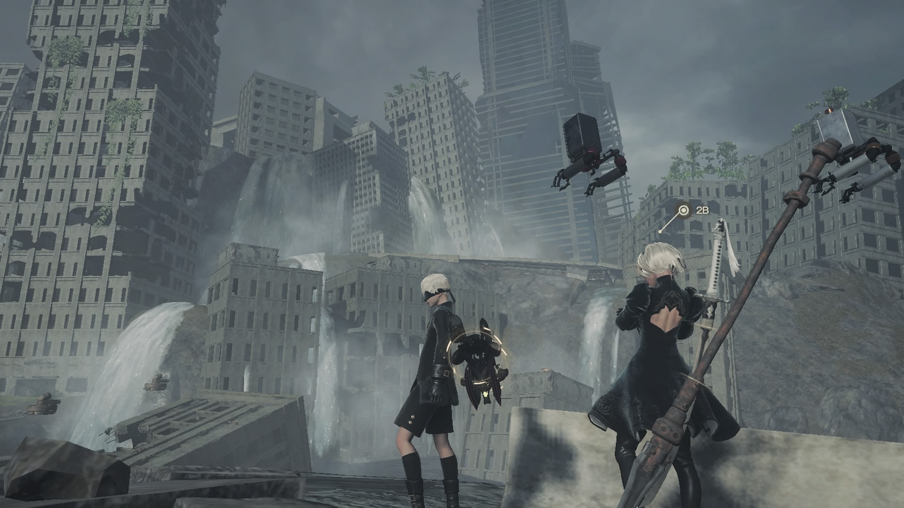
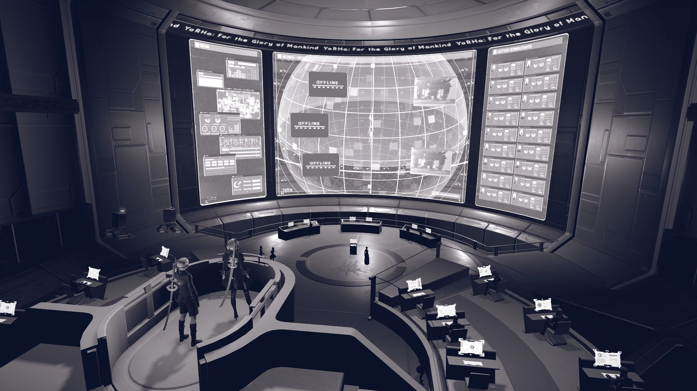

A large open city almost completely reclaimed by nature. The once-beautiful metropolis is now in shambles as machines and wild animals roam the landscape. This city has seen its many shares of conflicts from giant goliath attacks to alien invasions.
The Resistance Camp is where the Androids that fell to Earth before the YoRHa squad are based. These Androids have organized their own resistance army and lend their support to YoRHa as they share a common cause “for humanity.”
The area used to be part of a city but has lost its vegetation due to drought, which caused the soil to erode and become sand, easily shifted by the winds. It is now nothing more than a desert that the machines have clocked themselves with old human fabrics.
This abandoned apartment complex has been overtaken by dry sands, but vestiges of human civilization prevail in the form of destroyed buildings, playgrounds and structures. It is not all abandoned by lifeforms as some machines use the ruins of the housing as their own home.
This area almost seems untouched in comparison to the rest of the world with lush grass and massive waterfalls, until you get deeper into where the Forest Kingdom lies. That's not the only life form you will find in this forest as a separate group of machines have made their own little village.
This quiet and peaceful village of machines is located within the Forrest Zone right outside the City Ruins. Here peaceful machines dwell like how the old humans would in little huts wrapped around the base of a humungous tree. Due to the peaceful nature of the village, they once swore enemies of the androids now trade with Resistance members for resources.

The area is home to a group of highly isolationist machines that established a kingdom at the behest of their "king", subsequently claiming the castle deeper in. The once-great king who leads his people is nothing more than a monument as his followers desperately cling to his memory to guide the future of the kingdom.
A land of dreams once enjoyed by many. While the people have long disappeared, everything is still running. It appears that a community of special machine life forms still runs this area, with numerous individuals wearing flashy outfits from clown costumes to dapper suits.
This coastal city was destroyed long ago, and vegetation and animals have overtaken it, as it slowly submerges and decays due to its foundations being bombed during the war.
As the name implies this factory was abandoned long ago by the androids to produce weapons to fend off the alien invasion. That is until the machines took it over and use them to mass produce themselves.
The Resistance Camp is where the Androids that fell to Earth before the YoRHa squad are based. These Androids have organized their own resistance army and lend their support to YoRHa as they share a common cause “for humanity.”
